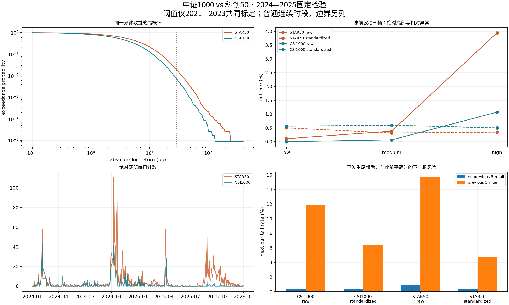
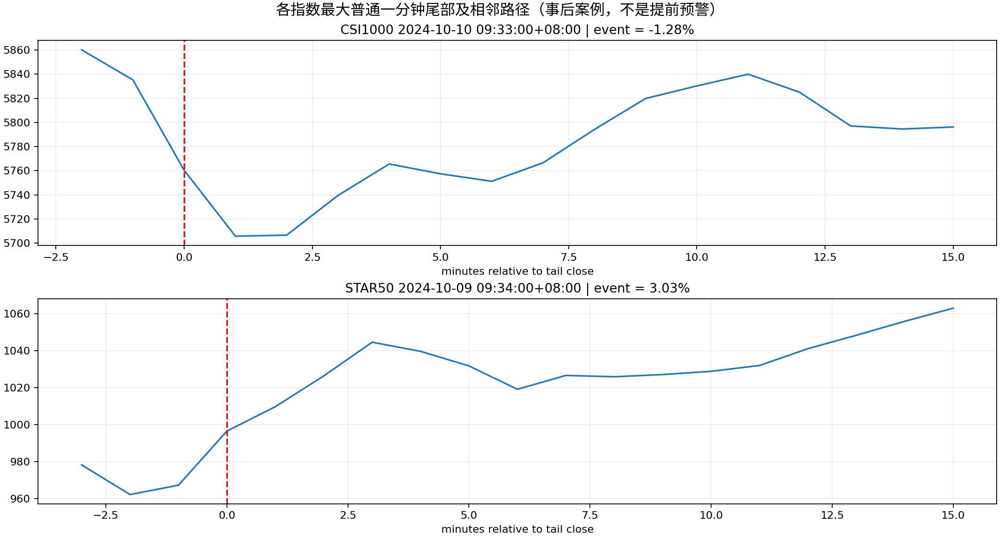

2021—2023共同标定，2024—2025固定重复历史检验；1m主分析、5m复核。绝对尾部和相对事前波动的异常分别统计，开盘/午休边界单列。没有新策略或交易路由。

| minutes | symbol | basis | bars | events | rate_pct | up | down | mean_abs_tail_bp | squared_return_pct |
|---|---|---|---|---|---|---|---|---|---|
| 1 | 000688.SH | raw | 115430 | 2191 | 1.8981 | 1264 | 927 | 41.2401 | 35.3199 |
| 1 | 000688.SH | standardized | 115430 | 442 | 0.3829 | 296 | 146 | 45.4494 | 10.9463 |
| 1 | 000852.SH | raw | 115430 | 824 | 0.7139 | 498 | 326 | 39.3284 | 21.3484 |
| 1 | 000852.SH | standardized | 115430 | 616 | 0.5337 | 381 | 235 | 32.4795 | 12.3898 |
| 5 | 000688.SH | raw | 22310 | 496 | 2.2232 | 286 | 210 | 91.5901 | 38.6479 |
| 5 | 000688.SH | standardized | 22310 | 120 | 0.5379 | 83 | 37 | 87.8443 | 10.6459 |
| 5 | 000852.SH | raw | 22310 | 211 | 0.9458 | 111 | 100 | 89.6007 | 25.9010 |
| 5 | 000852.SH | standardized | 22310 | 121 | 0.5424 | 81 | 40 | 73.5412 | 12.6604 |

| minutes | symbol | basis | test | observed | null_median | p_raw | permutations | p_holm |
|---|---|---|---|---|---|---|---|---|
| 1 | 000852.SH | raw | daily_fano | 13.60822 | 1.50802 | 0.001 | 999 | 0.024 |
| 1 | 000852.SH | raw | serial_risk_difference | 0.11414 | 0.01761 | 0.001 | 999 | 0.024 |
| 1 | 000852.SH | raw | vol_risk_difference | 0.01073 | 0.00506 | 0.002 | 999 | 0.024 |
| 1 | 000852.SH | standardized | daily_fano | 2.21824 | 0.95915 | 0.001 | 999 | 0.024 |
| 1 | 000852.SH | standardized | serial_risk_difference | 0.05952 | 0.02298 | 0.001 | 999 | 0.024 |
| 1 | 000852.SH | standardized | vol_risk_difference | -0.00059 | 0.00061 | 0.064 | 999 | 0.128 |
| 1 | 000688.SH | raw | daily_fano | 24.87059 | 0.98656 | 0.001 | 999 | 0.024 |
| 1 | 000688.SH | raw | serial_risk_difference | 0.14742 | 0.01741 | 0.001 | 999 | 0.024 |
| 1 | 000688.SH | raw | vol_risk_difference | 0.03836 | 0.00014 | 0.002 | 999 | 0.024 |
| 1 | 000688.SH | standardized | daily_fano | 2.49199 | 0.97302 | 0.001 | 999 | 0.024 |
| 1 | 000688.SH | standardized | serial_risk_difference | 0.04481 | 0.01356 | 0.001 | 999 | 0.024 |
| 1 | 000688.SH | standardized | vol_risk_difference | -0.00157 | -0.00003 | 0.002 | 999 | 0.024 |
| 5 | 000852.SH | raw | daily_fano | 5.92313 | 1.16451 | 0.001 | 999 | 0.024 |
| 5 | 000852.SH | raw | serial_risk_difference | 0.20398 | 0.00987 | 0.001 | 999 | 0.024 |
| 5 | 000852.SH | raw | vol_risk_difference | 0.01721 | 0.00606 | 0.002 | 999 | 0.024 |
| 5 | 000852.SH | standardized | daily_fano | 1.33177 | 0.98395 | 0.001 | 999 | 0.024 |
| 5 | 000852.SH | standardized | serial_risk_difference | 0.08671 | 0.01130 | 0.001 | 999 | 0.024 |
| 5 | 000852.SH | standardized | vol_risk_difference | -0.00399 | 0.00043 | 0.004 | 999 | 0.024 |
| 5 | 000688.SH | raw | daily_fano | 7.43620 | 0.97934 | 0.001 | 999 | 0.024 |
| 5 | 000688.SH | raw | serial_risk_difference | 0.22113 | 0.00908 | 0.001 | 999 | 0.024 |
| 5 | 000688.SH | raw | vol_risk_difference | 0.04497 | 0.00070 | 0.002 | 999 | 0.024 |
| 5 | 000688.SH | standardized | daily_fano | 1.13826 | 0.97125 | 0.011 | 999 | 0.033 |
| 5 | 000688.SH | standardized | serial_risk_difference | 0.01178 | 0.00318 | 0.357 | 999 | 0.357 |
| 5 | 000688.SH | standardized | vol_risk_difference | -0.00433 | 0.00013 | 0.002 | 999 | 0.024 |
事前波动条件 · 幅度×异常交叉表 · 聚集与首个事件 · 固定概率预测 · 经济幅度阈值计数 · 边界跳变 · 核验回执